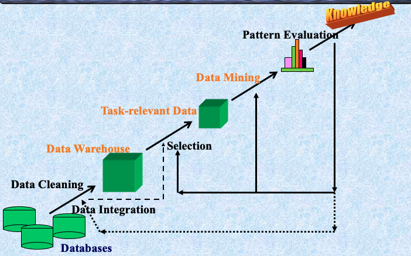
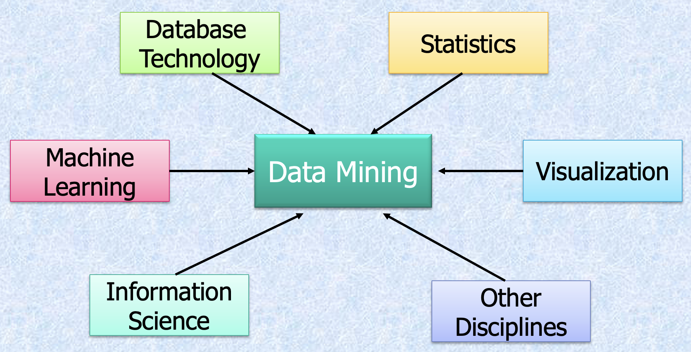

What are data? What is knowledge?
We can easily get a lot of data, while these data are meaningless to us. Then what is the thing we really need? Knowledge is something meaningful drawn from data. Knowledge is just what is useful to you.
我们可以轻松地获取大量数据，而这些数据对我们来说毫无意义。那么我们真正需要的是什么？knowledge 是从 data 中提取出的有意义的信息。knowledge 就是对你有用的东西。
We are drowning in data, but starving for knowledge!
Solution: Data warehousing and data mining
- 数据仓储和在线分析处理
- 从大型数据库中提取有趣的知识（规则、规律、模式、约束）
What Is Data Mining?
数据挖掘（在数据库中发现知识，KDD）：从大型数据库中提取有趣（非平凡、隐含、先前未知且潜在有用）的信息或模式。
Alternative names and their “inside stories”: Knowledge discovery(mining) in databases (KDD), knowledge extraction, data/pattern analysis, data archeology, data dredging, information harvesting, business intelligence, etc.
Why Data Mining?
潜在应用
数据库分析和决策支持：
- 市场分析与管理：目标营销，客户关系管理，市场篮子分析，交叉销售，市场细分
- 风险分析与管理：预测，客户保留，改进承保，质量控制，竞争分析
- 诈骗检测与管理
其他应用
- 文本挖掘（新闻组，电子邮件，文档）和Web分析
- 智能查询回答
数据挖掘：知识发现过程的核心

Steps of a KDD Process
- 学习应用领域：相关的先前知识和应用的目标
- 创建目标数据集：数据选择
- 数据清理和预处理：（可能占60%的工作量！）
- 数据减少和转换：找到有用的特征，降低维度/变量，不变表示
- 选择数据挖掘功能：摘要，分类，回归，关联，聚类
- 选择挖掘算法
- 数据挖掘：寻找感兴趣的模式
- 模式评估和知识呈现：可视化，转换，去除冗余模式等
- 利用发现的知识

Data Mining: On What Kind of Data?
- 关系数据库
- 数据仓库
- 事务性数据库
- 高级数据库和信息库
- 面向对象和面向对象关系数据库
- 空间数据库
- 时间序列数据和临时数据
- 文本数据库和多媒体数据库
- 异构和遗留数据库
- 万维网
Data Mining Functionalities
- 概念描述：表征和区分
- 推广、总结和对比数据特征，例如，干燥区域与湿润区域
- 关联（相关性和因果关系）
- 多维与单维关联
- age(X, “20..29”) ^ income(X, “20..29K”) à buys(X, “PC”) [support = 2%, confidence = 60%]
- contains(T, “computer”) à contains(x, “software”) [1%, 75%]
- 分类和预测
- 查找描述和区分未来预测的类别或概念的模型（函数）。例如，根据气候对国家进行分类，或根据油耗对汽车进行分类
- 展示：决策树、分类规则、神经网络
- 预测：预测一些未知或缺失的数值
- 聚类分析
- 类别标签未知：将数据分组形成新类别，例如，聚类房屋以找到分布模式
- 基于原则的聚类：最大化类内相似性，最小化类间相似性
- 离群值分析
- 离群值：不符合数据一般行为的数据对象
- 它可以被视为噪声或异常，但在欺诈检测、罕见事件分析中非常有用
- 趋势和演变分析
- 趋势和偏差：回归分析
- 时序模式挖掘，周期性分析
- 基于相似性的分析
- 其他面向模式或统计分析
Are All the “Discovered” Patterns Interesting?
- 数据挖掘系统/查询可能生成数千个模式，其中并非所有都有趣。建议的方法：以人为中心，基于查询，重点挖掘
- Interestingness measures: 模式易于被人类理解、在新数据或测试数据上具有一定程度的准确性、潜在有用、新颖或验证用户希望确认的某些假设时，模式是有趣的
- 客观与主观的有趣性度量:
- 客观：基于模式的统计和结构，例如，支持度、置信度等
- 主观：基于用户对数据的信仰，例如，出乎意料性、新颖性、可操作性等。
Can We Find All and Only Interesting Patterns?
- 找到所有有趣的模式：完整性。数据挖掘系统是否能够找到所有有趣的模式？
- 仅寻找有趣的模式：优化。数据挖掘系统是否能够找到仅有趣的模式？
- Approaches
- 首先生成所有模式，然后过滤掉不有趣的模式
- 仅生成有趣的模式——挖掘查询优化

Data Mining: Classification Schemes
- 一般功能
- 描述性数据挖掘
- 预测性数据挖掘
- 不同视图，不同分类
- 要挖掘的数据库种类
- 要发现的知识种类
- 使用的技术种类
数据挖掘分类的多维视图
- 要挖掘的数据库
- 关系型、事务型、面向对象、面向对象关系、主动、空间、时序、文本、多媒体、异构、遗留、万维网等。
- 要挖掘的知识
- 表征、区分、关联、分类、聚类、趋势、偏差、离群值分析等。
- 多个/集成功能和多层次挖掘
- 使用的技术
- 面向数据库、数据仓库（OLAP）、机器学习、统计学、可视化、神经网络等。
- 适应的应用
- 零售、电信、银行、欺诈分析、DNA挖掘、股票市场分析、Web挖掘、Web日志分析等。
OLAP挖掘：数据挖掘和数据仓库的集成
- 数据挖掘系统、DBMS、数据仓库系统的耦合
- 无耦合，松耦合，半紧耦合，紧耦合
- 在线分析挖掘数据
- 挖掘和OLAP技术的集成
- 交互挖掘多层次知识
- 通过钻取/滚动、切片/切块等在不同抽象层次上挖掘知识的必要性
- 多个挖掘功能的集成
- 表征分类、首先聚类，然后关联
OLAM架构

Major Issues in Data Mining
- 挖掘方法和用户交互
- 挖掘数据库中不同类型的知识
- 在多个抽象层次上交互挖掘知识
- 合并背景知识
- 数据挖掘查询语言和临时数据挖掘
- 表达和可视化数据挖掘结果
- 处理噪声和不完整数据
- 模式评估：有趣性问题
- 性能和可伸缩性
- 数据挖掘算法的效率和可伸缩性
- 并行、分布和增量挖掘方法
- 与数据类型多样性相关的问题
- 处理关系和复杂类型的数据
- 从异构数据库和全球信息系统（WWW）挖掘信息
- 与应用和社会影响相关的问题
- 应用发现的知识
- 领域特定的数据挖掘工具
- 智能查询回答
- 过程控制和决策制定
- 将发现的知识与现有知识整合：知识融合问题
- 保护数据安全、完整性和隐私
- 应用发现的知识